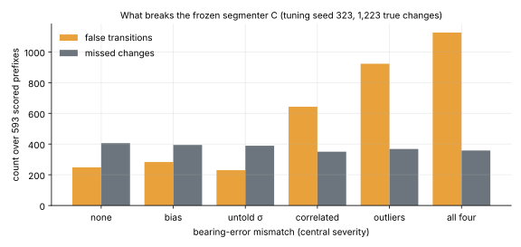
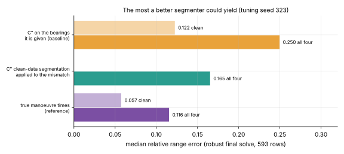
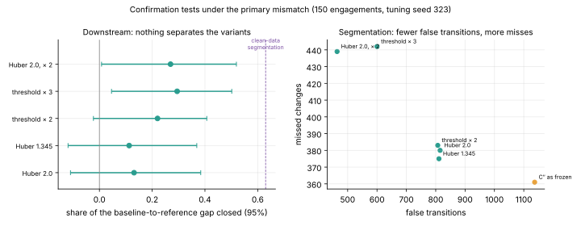

The robust segmenter: what broke C, and why the fix was a threshold
Spec 011, stopped on the tuning seed; nothing trained, no gate
11 November 2026 · spec 011 · gitma2
Why this study
Gate H: under bearing-error mismatch the cost is in the segmentation.
The standing classical system went from 0.102 to 0.280 in median range error.
Plan: find what breaks the segmenter C, make its tests robust, measure the share of the gap closed.
What breaks C

Outliers and correlated error make C declare transitions that are not there. Misses do not rise. Bias and an untold σ do nothing.
How confirmation is fooled
C accepts a transition when the fit improves by more than a χ² threshold (13.8).
One bearing 10 σ out adds about 100 to the sum of squares.
Any extra knot that absorbs part of it "buys" a transition.
The robust test: Huber-weighted fits, Huber cost, same threshold rule.
The most a better segmenter could yield

C″'s clean-data segmentation would close 0.63 [0.46, 0.81] of the gap, and still sit 43% above the reference. Clean, C″ is already twice the reference.
What the robust test did

Huber removes 28% of false transitions; so does doubling the threshold. No pair of variants is separated.
By the rule declared beforehand
Confirmation test
Range error
Share closed
False
Misses
C″ as frozen
0.254
0
1,137
361
Huber 2.0
0.236
0.13 [−0.11, +0.38]
815
380
Threshold × 2
0.223
0.22 [−0.02, +0.41]
807
383
Threshold × 3
0.213
0.29 [+0.05, +0.50]
600
442
Huber 2.0, × 2
0.217
0.27 [+0.01, +0.52]
464
439
The robust test is not carried.
A robust variant had to beat the best plain threshold with an interval excluding zero. None did.
What was not achieved
No robust design that beats a threshold change.
No gate: every figure is from tuning seed 323, 150 engagements.
Most of the gap stands. Misses, about 30% of true changes even on clean data, were not addressed.
The design followed what changed under mismatch, not what the gap is made of.
What comes next
C stays frozen; C″ stays the standing classical system.
Spec 012, the scaled end-to-end regressor, is also reported beside C with a raised threshold.
Open: changes that leave too little trace to confirm. A limit of information before a limit of method.